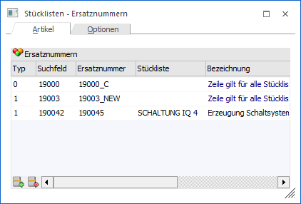

Durch die Anwahl des Buttons "Stücklisten - Ersatznummern" im Programm Stückliste öffnet sich das Fenster "Stücklisten - Ersatznummern". In diesem können u.a. Stücklistenkomponenten angegeben werden, welche bei der Produktionsauftragsanlage (z.B. über die Produktionsvorbereitung bzw. während der Auftragserfassung) automatisch ersetzt werden sollen.

Das Fenster ist dabei in die folgenden Register unterteilt, welche in den nachfolgenden Kapiteln detailliert beschrieben werden:
ü Register "Artikel"
In dem Register
"Artikel" kann definiert werden, welche Stücklistenkomponenten durch welche
ersetzt werden sollen und zu welchem Zeitpunkt dieses zu geschehen hat.
ü Register "Optionen"
Mit Hilfe des
Registers "Optionen" kann die Option "Immer vom Lager" parametrisiert
werden.
Buttons

Ø Ok
Durch Anwahl des Buttons "Ok" bzw. der Taste F5 werden die Änderungen gespeichert.
Ø Ende
Mit Hilfe des Buttons "Ende" bzw. der Taste ESC wird der Programmbereich verlassen und alle nicht gespeicherten Änderungen verworfen.